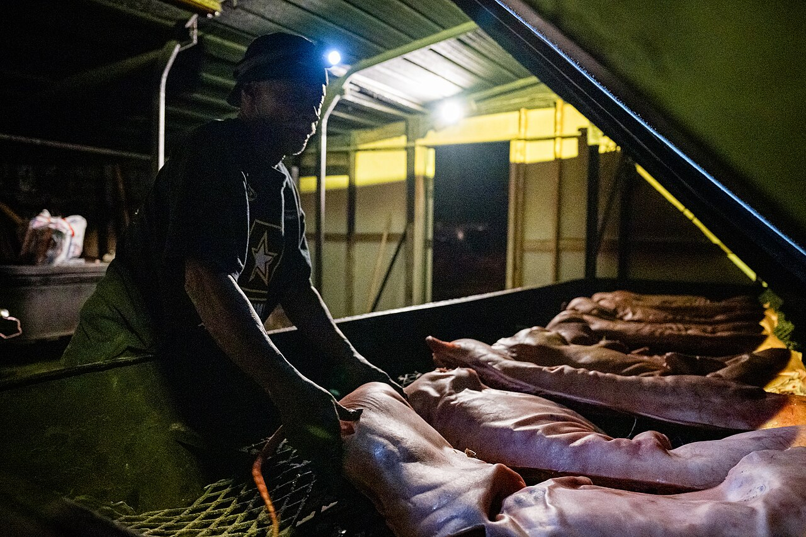
a directory of a living traditionCarolina Barbecue
the pits, the plates, and what to call 'em — North and South Carolina.
Whole hogs over coals in the east. Shoulders and a red dip in the Piedmont. Mustard in the Midlands. Hash over rice down the Pee Dee.
Worth the drive
Pits somebody already bragged on, in print: a Beard award, a spot on a trail, a wood-fire ticket, an oral history taken at the pit. The count is how many different folks said so — not our opinion. Find one near you →
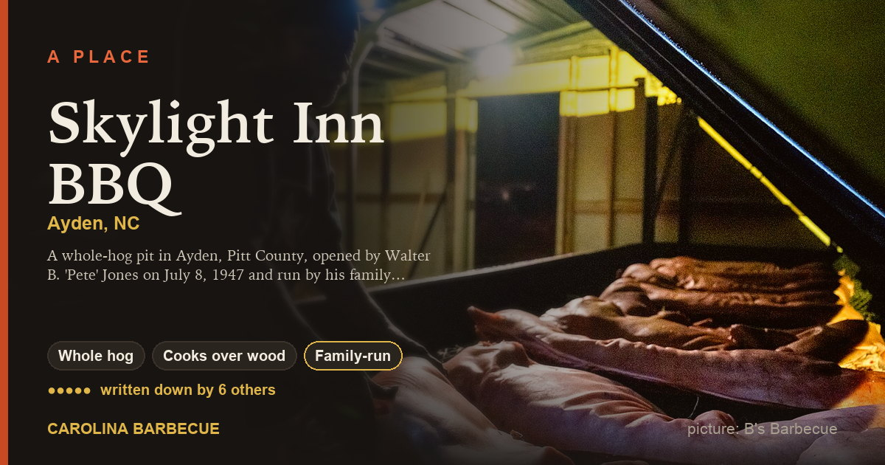
Skylight Inn BBQ ●●●●●Ayden, NC — James Beard Foundation, True 'Cue (Campaign for Real Barbecue), NC Barbecue Society Historic Barbecue Trail
🐖 Whole hog🔥 Cooks over wood👪 Family-run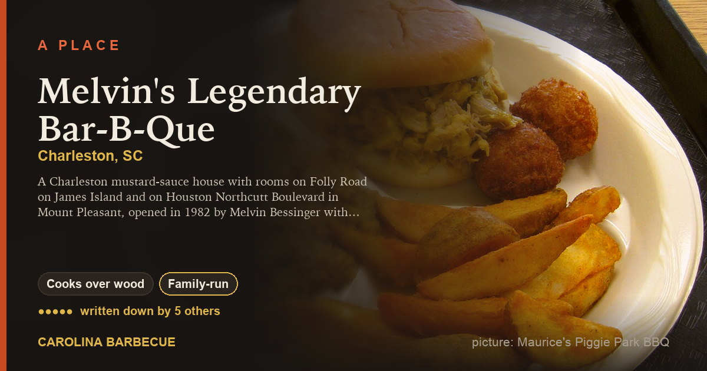
Melvin's Legendary Bar-B-Que ●●●●●Charleston, SC — Southern Foodways Alliance, True 'Cue (Campaign for Real Barbecue), Southern Living
🔥 Cooks over wood👪 Family-run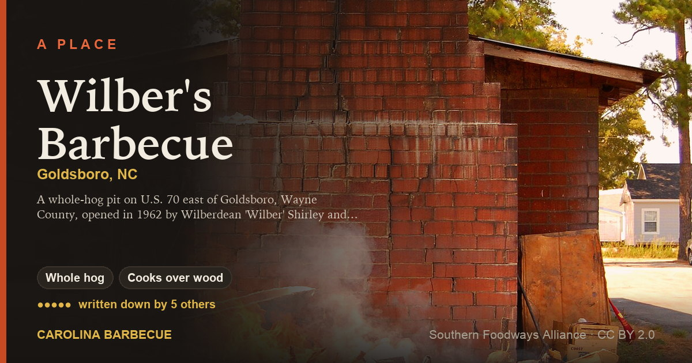
Wilber's Barbecue ●●●●●Goldsboro, NC — True 'Cue (Campaign for Real Barbecue), NC Barbecue Society Historic Barbecue Trail, Our State magazine
🐖 Whole hog🔥 Cooks over wood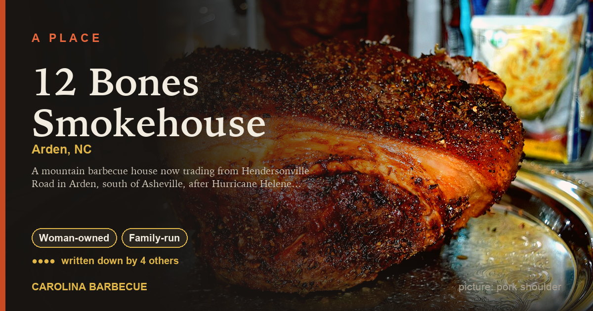
12 Bones Smokehouse ●●●●Arden, NC — Our State magazine, Other named recognition, Southern Living
♀ Woman-owned👪 Family-run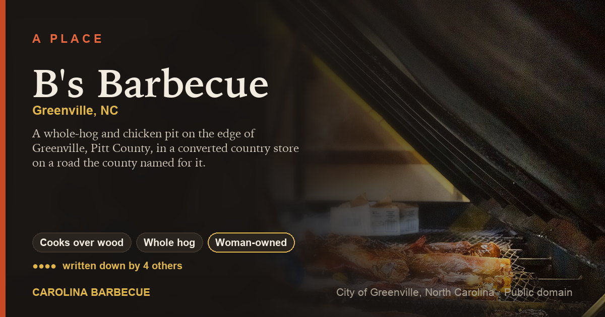
B's Barbecue ●●●●Greenville, NC — True 'Cue (Campaign for Real Barbecue), NC Barbecue Society Historic Barbecue Trail, Southern Foodways Alliance
🔥 Cooks over wood🐖 Whole hog♀ Woman-owned👪 Family-run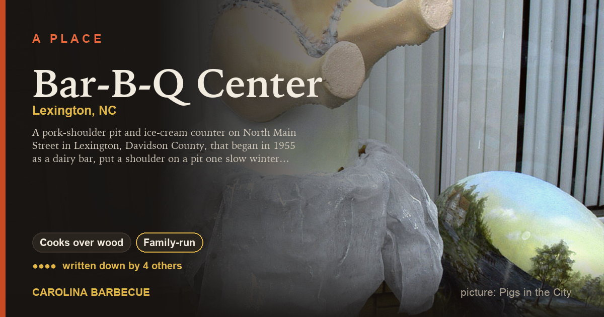
Bar-B-Q Center ●●●●Lexington, NC — True 'Cue (Campaign for Real Barbecue), NC Barbecue Society Historic Barbecue Trail, Southern Foodways Alliance
🔥 Cooks over wood👪 Family-runPigs that serve themselves
Signs, mascots, and the 1830s election prints. All free to use, licence beside each one. The whole gallery →
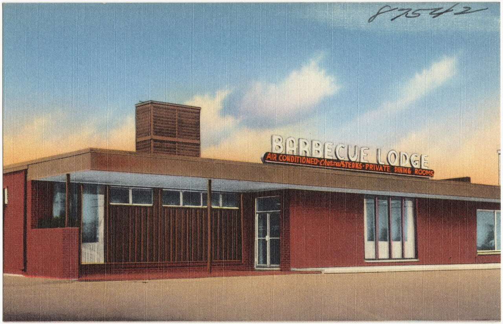
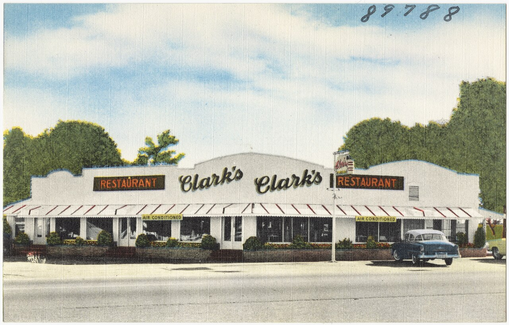
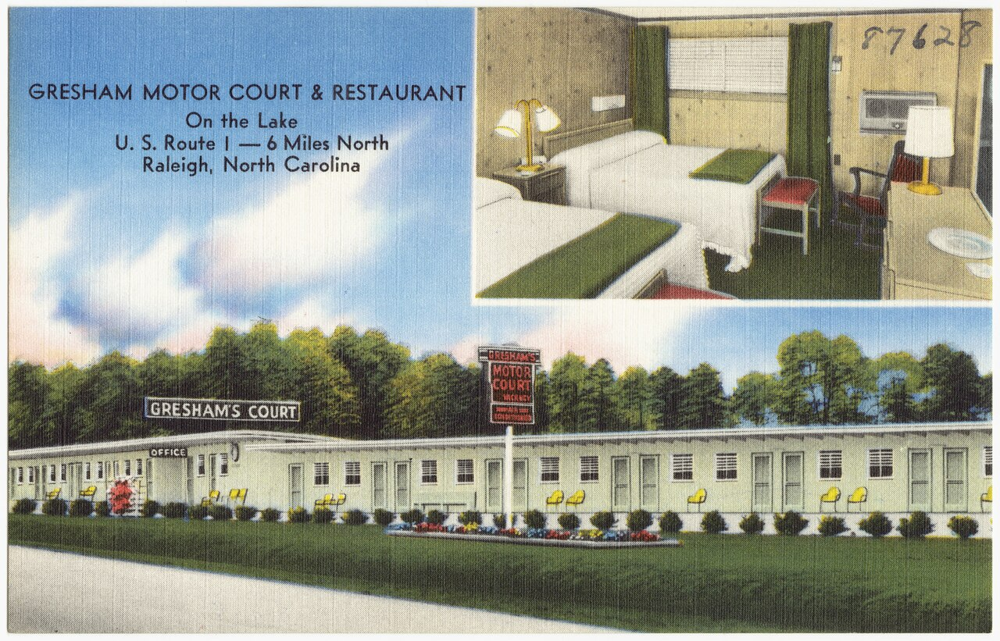
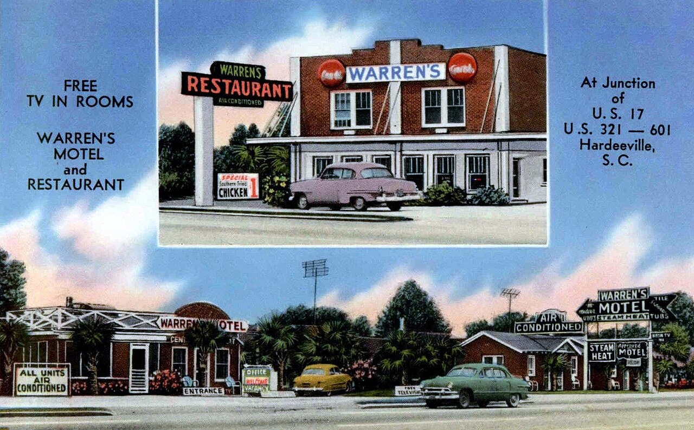
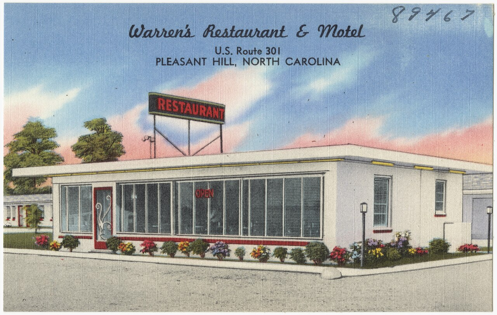
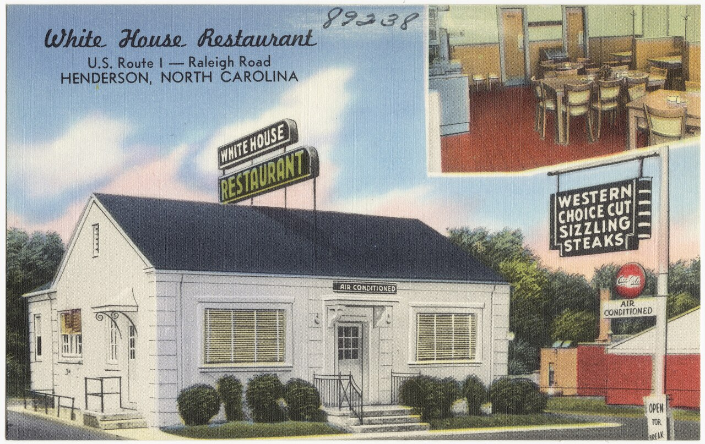
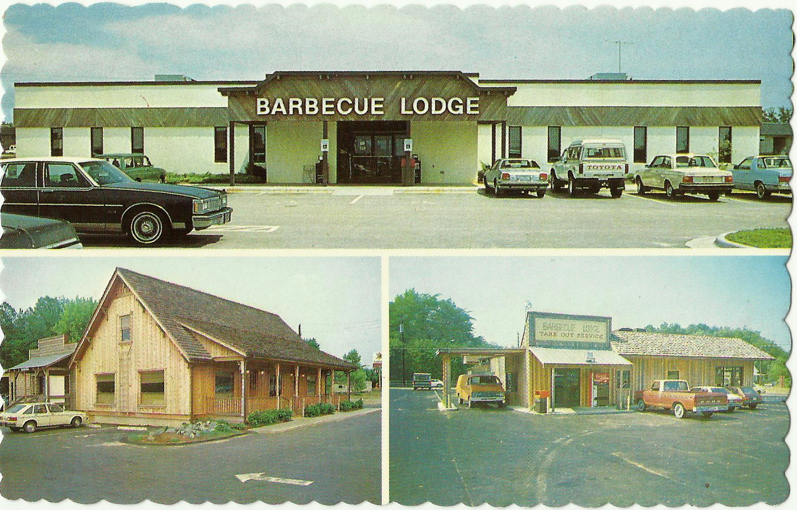
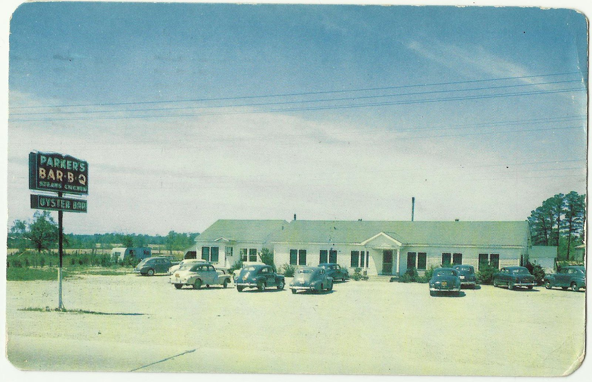
The Great Divide
North Carolina cooks barbecue two ways and has never agreed to disagree about it. East of Raleigh the whole hog goes on the pit and the sauce is vinegar, salt and pepper with no tomato in it.
Which side are you on?
Six questions about sauce, slaw and how you order. At the end a style claims you. It don't hold up in court.
Styles (6)
The regional traditions: what is cooked, over what, with which sauce.
Sauces (15)
The sauces and dips that mark the map.
- Heavy tomato (3)
- Bone Suckin' Sauce
- heavy tomato sauce
- Sam Jones BBQ sauce
- Lexington dip (2)
- George's Barbecue Sauce
- Lexington dip
- Light tomato (1)
- light tomato sauce
- Mustard (4)
- Golding Farms Foods
- Maurice's Southern Gold
- Melvin's Golden Sauce
- mustard-based barbecue sauce
- Other (2)
- Carolina Treet
- Texas Pete
- Vinegar and pepper (3)
- Scott's Barbecue Sauce
- vinegar-and-pepper sauce
- Wells Hog Heaven Barbecue Sauce
Dishes (27)
What is on the plate, the tray and the table.
- Bread (2)
- cornbread
- hushpuppies
- Condiments (2)
- Duke's mayonnaise
- pickles
- Drinks (3)
- Blenheim Ginger Ale
- Cheerwine
- sweet tea
- On the plate (5)
- barbecue chicken
- barbecue sandwich
- barbecue tray
- chicken bog
- outside brown
- Sides (12)
- baked beans
- boiled potatoes
- Brunswick stew
- collards
- fried okra
- green beans
- hash and rice
- mac and cheese
- … all 12
- Sweets (3)
- banana pudding
- peach cobbler
- pig pickin' cake
The pit (11)
Cuts, fuel, pits, tools and methods.
- Cookers (2)
- gas and electric cookers
- pig cooker
- Cuts (2)
- pork shoulder
- whole hog
- Fuel (1)
- hickory and oak
- Methods (1)
- direct heat
- Pits (2)
- block pit
- brick pit
- Preparation (1)
- hog killing
- Tools (2)
- burn barrel
- chopping block
Pits and places (58)
Restaurants, stands and pit houses, past and present.
- North Carolina (35)
- 12 Bones Smokehouse
- Allen & Son Barbeque
- Alston Bridges Barbecue
- Backyard BBQ Pit
- Bar-B-Q Center
- Bobbee O's BBQ
- B's Barbecue
- Bum's Restaurant
- … all 35
- South Carolina (23)
- Bessinger's Bar-B-Q
- Big T Bar-B-Q
- Bobby's BBQ
- Brown's Bar-B-Que
- Cannon's BBQ
- Carolina Bar-B-Que
- Cooper's Country Store
- Dukes Bar-B-Que
- … all 23
People (25)
Pitmasters, families, writers and organizers.
- Cooks (2)
- Skilton Dennis
- Adam Scott
- Founders (4)
- Joe Bessinger
- Maurice Bessinger
- Jim Early
- Lake High
- Pitmasters (12)
- Bum Dennis
- Pete Jones
- Sam Jones
- Bob Melton
- Ed Mitchell
- Wayne Monk
- Elliott Moss
- Rodney Scott
- … all 12
- Scholars (1)
- John Shelton Reed
- Writers (6)
- Jerry Bledsoe
- Rien Fertel
- Bob Garner
- Adrian Miller
- Robert F. Moss
- Dennis Rogers
Organizations (4)
Societies, campaigns, trails and archives.
- North Carolina (1)
- North Carolina Barbecue Society
- South Carolina (1)
- South Carolina Barbeque Association
- Both states (1)
- Campaign for Real Barbecue
- Beyond the Carolinas (1)
- Southern Foodways Alliance
Events (7)
Festivals, fundraisers, political barbecues and competitions.
- North Carolina (3)
- Hillsborough Hog Day
- Lexington Barbecue Festival
- Mallard Creek Barbecue
- South Carolina (1)
- South Carolina Festival of Discovery
- Both states (3)
- fundraiser barbecue
- pig pickin'
- political barbecue
Words (15)
The vocabulary, with its roots.
- B (1)
- barbecue
- C (2)
- Carolina Gold
- chopped
- D (3)
- dip
- Down East
- Dutch Fork
- F (1)
- fixins
- H (1)
- hog
- L (1)
- light bread
- P (5)
- Pee Dee
- Piedmont
- pit
- pitmaster
- pulled pork
- S (1)
- slaw
Art and signs (7)
Pigs that serve themselves, roadside signs, prints and mascots.
- Mascots (1)
- the pig mascot
- Photographs (1)
- The FSA photographs of Carolina eating
- Postcards (1)
- barbecue postcards
- Prints (1)
- Going the whole hog — the 1830s barbecue lithographs
- Signs (2)
- the pig that serves itself
- roadside barbecue signs
- Statues (1)
- Pigs in the City
Stories (4)
The wars, the maps and the long reads.
- Essays (3)
- How to order
- The Great Divide
- The Sunday question
- Where it came from (1)
- Where all of this came from
Reading the marks
Plain prose is cited, and the source is on the page. Tradition holds — is what the tradition says, hedged. Inference — is us reasoning. It's all JSON too, under /api/, and what we don't have is at what we know.